The Peace Courts Administration System is a web-based platform designed to optimize the management of peace courts and peace judges. It streamlines inventory control, resource assignments, and judicial certifications, enabling centralized data management and expediting administrative processes. This system ensures efficient and transparent handling of resources and personnel, enhancing operational effectiveness and accountability within the judicial district.
This system allows:
Main Menu of the Justice of the Peace Court Administration System
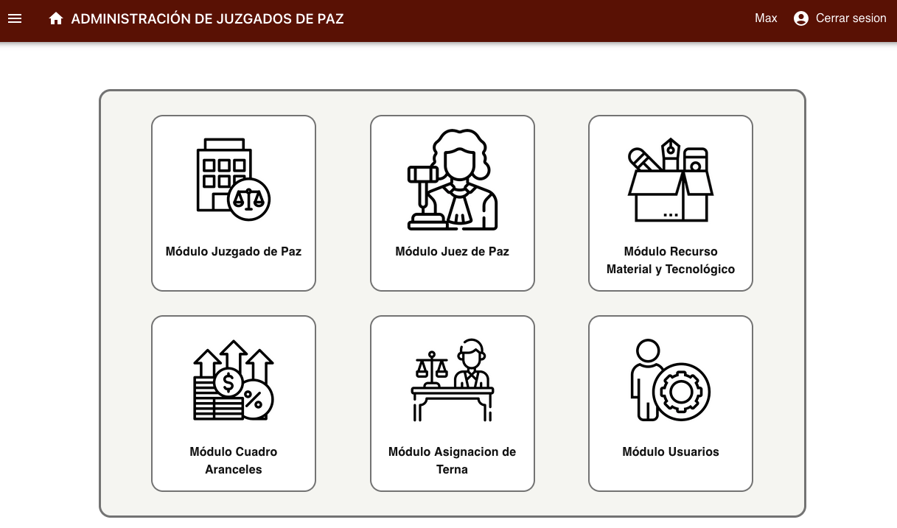Justice of the Peace Administration Module
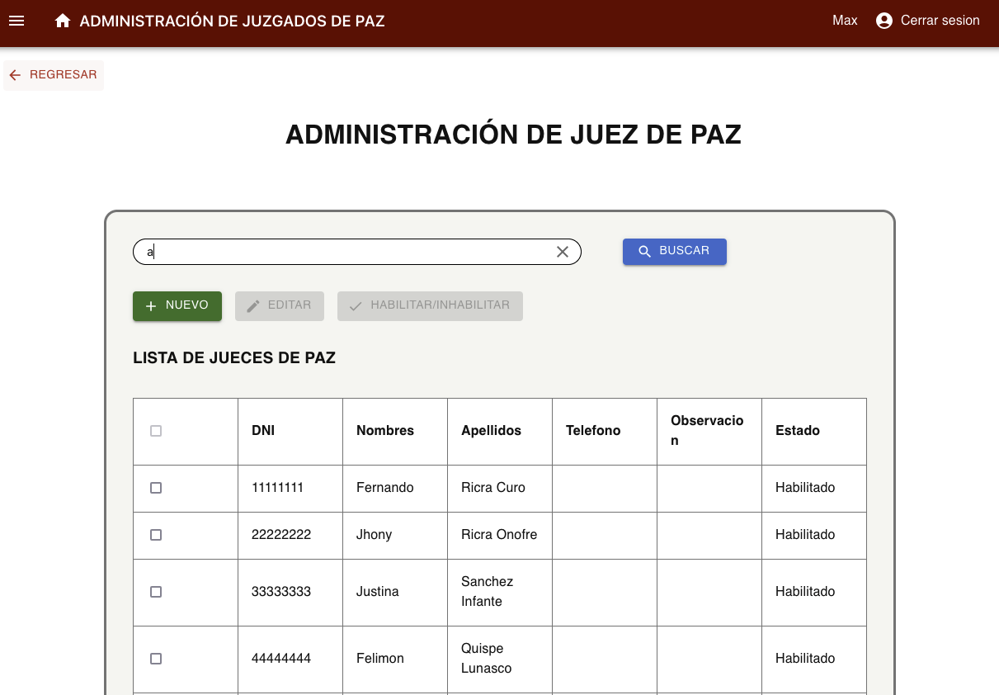Justice of the Peace Registration: Registration, updating, and administration of justices of the peace
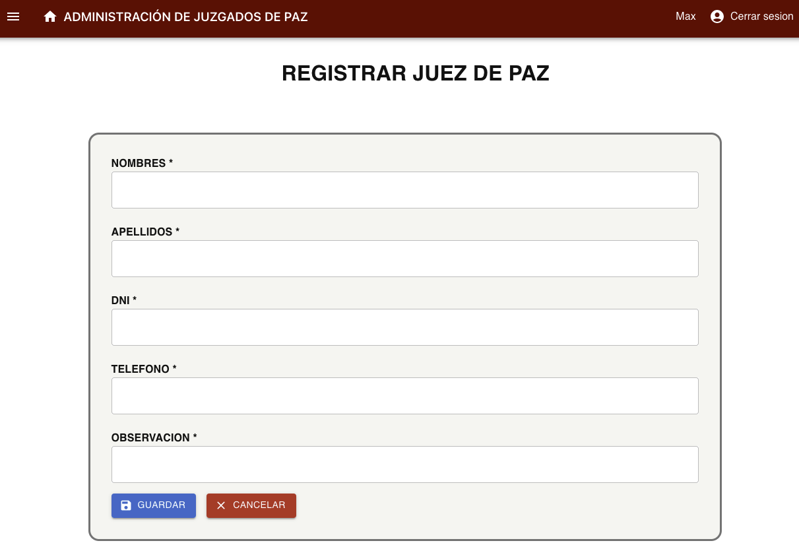Justice of the Peace Court Administration Module
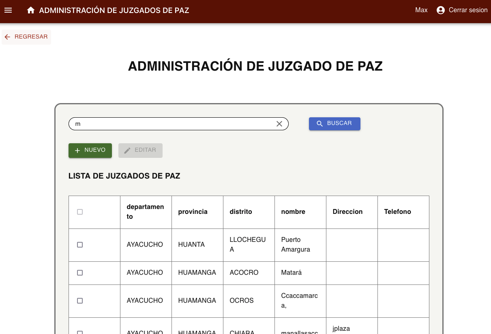Material and Technological Resources Registration: Monitoring of assets assigned to each justice of the peace court with real-time updates.
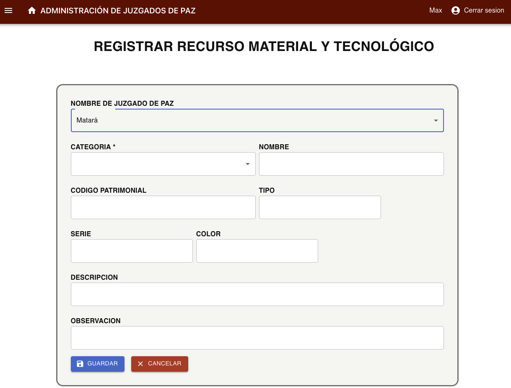Justice of the Peace Court Registration
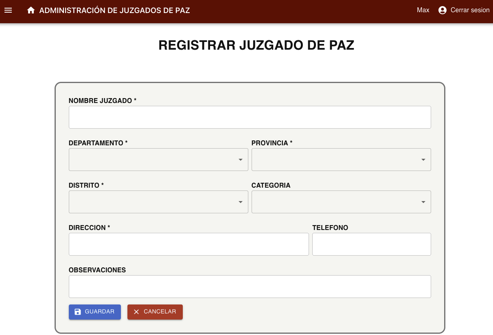Assignment of Justice of the Peace
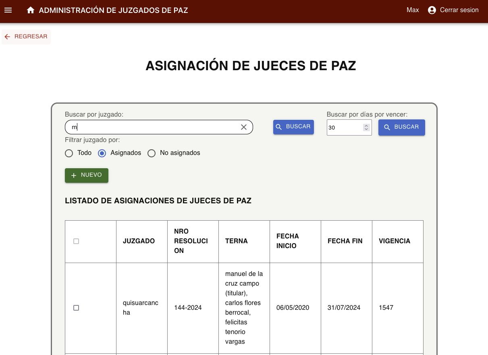User Management: Administration of users with different roles and permissions to ensure secure and organized access to the platform
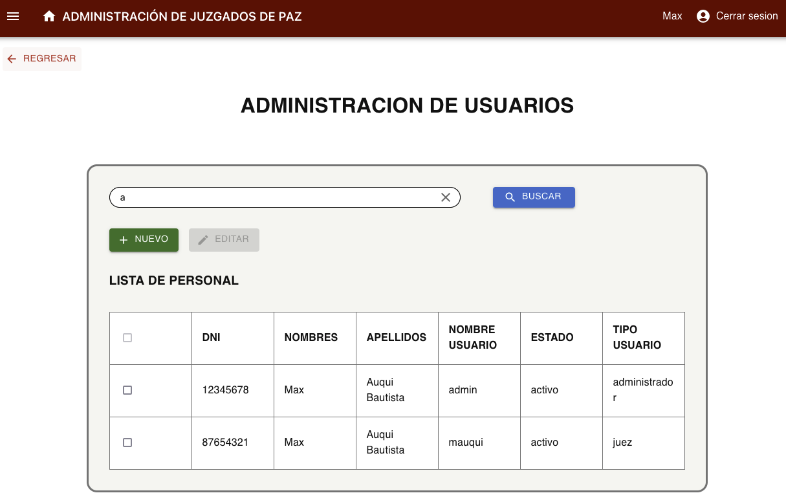User Account Registration
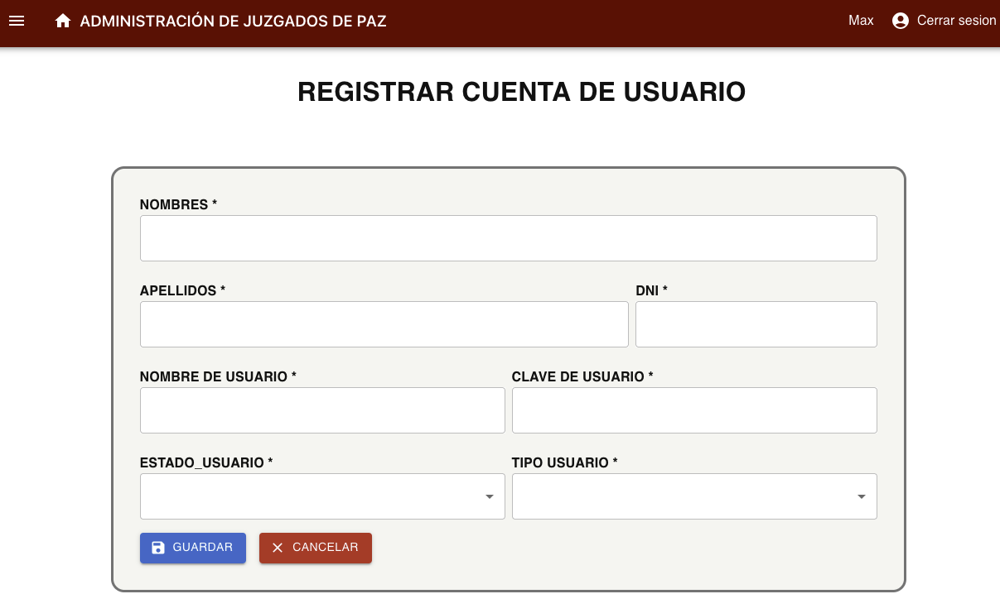Tariff Table Management
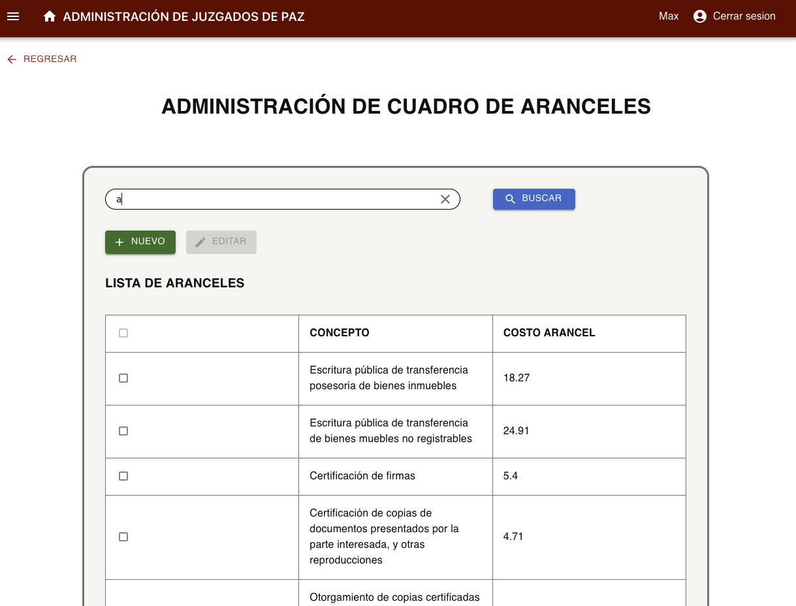Tariff Registration
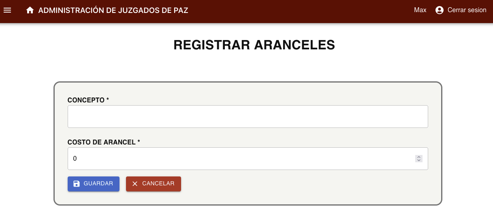Justice of the Peace Module
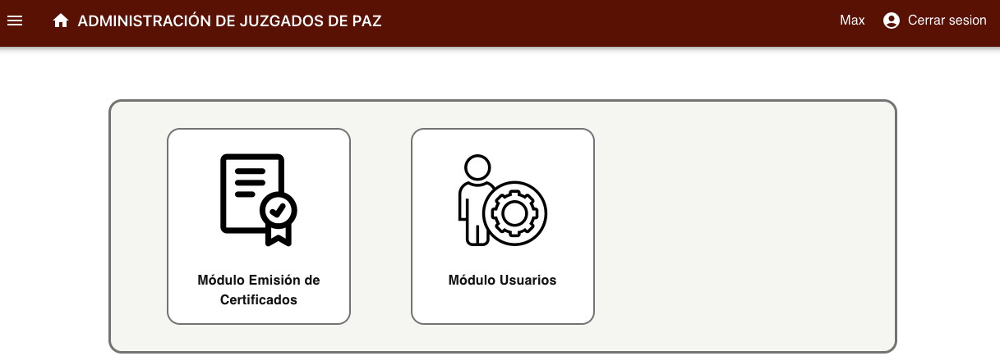Certificate Issuance Module: Supports justices of the peace in drafting, issuing, and managing standardized certificates, ensuring access to updated tariffs.
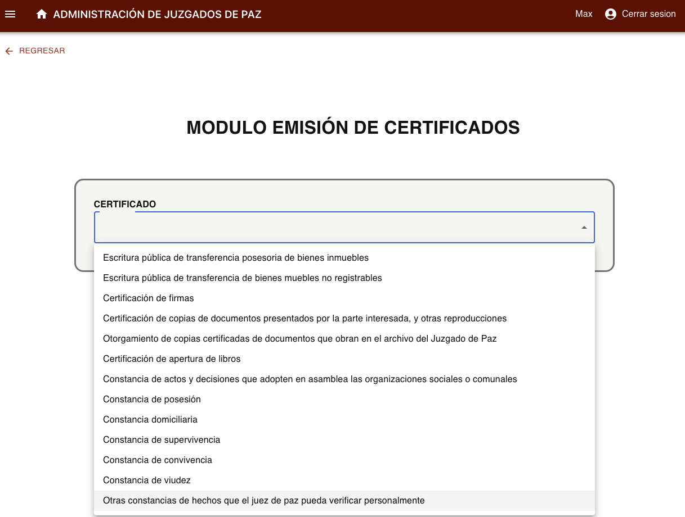Certificate Issuance Registration
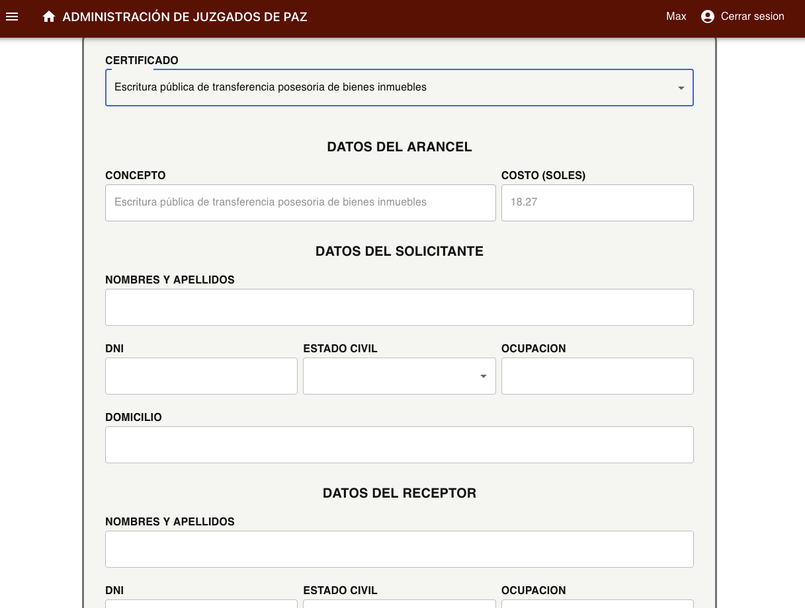If you have any questions, contact us: